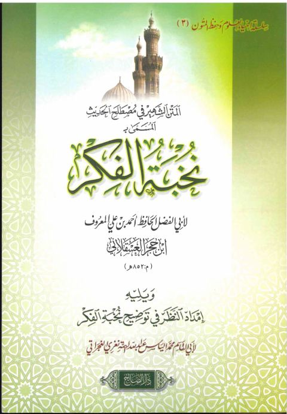

دار الصالح
Publisher
Resources
 نزهة النظر في توضيح نخبة الفكر مع حاشية أشرف عباس القاسمي
نزهة النظر في توضيح نخبة الفكر مع حاشية أشرف عباس القاسمي
أحمد بن علي بن حجر العسقلاني
نزهة النظر في توضيح نخبة الفكر مع حاشية أشرف عباس القاسمي
نزهة النظر في توضيح نخبة الفكر مع حاشية أشرف عباس القاسمي
أحمد بن علي بن حجر العسقلاني

المتن الشهير في مصطلح الحديث المسمى بنخبة الفكر ويليه إمداد النظر في توضيح نخبة الفكر للغجراتي المتن الشهير في مصطلح الحديث المسمى بنخبة الفكر ويليه إمداد النظر في توضيح نخبة الفكر للغجراتي أحمد بن علي ابن حجر العسقلاني